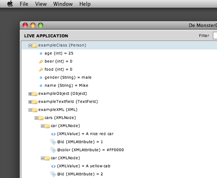

The live application panel allows you to explore all public properties of your application.
You can click on any Class to view it's properties and methods in the inspector panel.
From that panel you can change properties and run methods at runtime.
A basic application tree looks something like this:

We use icons to distinct between different object types.